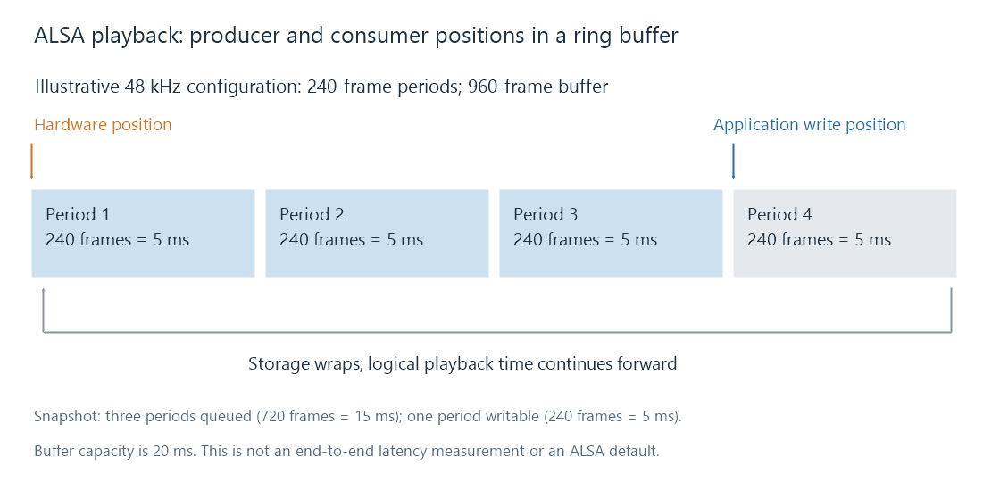

ALSA
ALSA supplies Linux audio driver interfaces and a PCM library with configurable device routes, sample formats, and ring-buffer timing.
ALSA, the Advanced Linux Sound Architecture, includes the Linux audio driver framework and the commonly used alsa-lib interface. Its PCM interface lets an application or sound server send sample frames to an audio device.
A program saying that it uses ALSA has not yet identified the complete route. The name it opens can select direct hardware, conversion plugins, software mixing or a sound-server connection.
The PCM name selects a route
| PCM route or plugin | Interpretation |
|---|---|
hw |
Communicates with the kernel PCM device without library format conversion |
plug |
Can adapt format, rate or channel requirements for its downstream PCM |
dmix |
Provides software mixing for suitable PCM routes |
default |
A configured name whose meaning depends on the installed configuration |
For example, hw:0,0 identifies a hardware PCM by card and device number in that system. Card enumeration can change, and the device's supported parameters still need to be established.
Opening default does not prove direct hardware access. It may resolve through configuration to a sound server. Nor does the direct hw library route prove that a later driver or device applies no processing.
This is why a Linux output comparison needs both the backend name and the resolved PCM route.
A ring buffer separates producer and consumer
The application writes frames ahead of the hardware position. As playback proceeds, the device consumes them and the application gains writable space. The storage wraps around, while the logical playback position continues forward.

Suppose the selected rate is 48 kHz, the period is 240 frames, and the buffer contains 960 frames:
period duration = 240 / 48,000 = 5 ms
buffer capacity = 960 / 48,000 = 20 ms
A period is a unit used in the configured transfer and notification scheme. It is not necessarily the total audible delay. The current amount queued may be less than the buffer capacity, and downstream stages can contribute additional delay.
For stereo signed 16-bit PCM, 240 sample frames occupy 960 bytes: 240 × two channels × two bytes. ALSA frame counts do not double just because there are two channels.
The interleaved write interface takes successive channel samples together; the noninterleaved interface takes separate channel arrays. Memory-mapped access exposes buffer areas with defined positions and strides. All still require the application to respect the agreed layout and acknowledge transferred frames.
What an underrun means
Imagine that the buffer contains a full 20 ms of prepared audio, then the producer cannot provide any more for 25 ms. In the idealized timing model, the device exhausts the queue after 20 ms, leaving a 5 ms shortage before the producer returns.
ALSA represents a playback underrun as an XRUN, commonly reported by an I/O call as -EPIPE. Recovery can prepare the PCM stream to accept audio again. It cannot retroactively play the missing frames at the time when they should have been heard.
A movie player must decide how to restore its timeline after the discontinuity. Blindly resuming old queued content can leave sound late relative to video; skipping content or rebuilding synchronization makes another tradeoff.
A larger buffer can tolerate a longer stall but also holds more audio ahead of presentation. A smaller period can provide more frequent opportunities to service the stream while increasing scheduling overhead. Neither value alone explains a failure: the actual producer timing matters.
Requested and negotiated parameters
ALSA hardware parameters describe the rate, channels, format, access mode, period and buffer. The parameter system narrows available choices until a valid configuration is selected.
An API that requests a value “near” a desired rate or size can return another supported value. The application must use the negotiated result in its arithmetic. Interpreting 44.1 kHz frames as if the device were running at 48 kHz would change calculated durations and pacing.
The sample container also needs attention. Packed 24-bit PCM and 24 valid bits in a 32-bit container have different byte strides even when they describe the same precision.
ALSA on which machine?
For remote Emby playback, the server's audio subsystem is generally not the device playing the sound. The server delivers media; the client device's output path drives its speakers or digital connection.
On a Linux client, PulseAudio or PipeWire can own the hardware PCM and provide mixing, routing and conversion above ALSA. Changing the server's ALSA default therefore does not automatically change a remote television or browser's audio.
Locate the client route first, then record its actual PCM target, negotiated format and XRUN behavior. Those observations identify whether the issue is routing, format selection or keeping the hardware supplied on time.